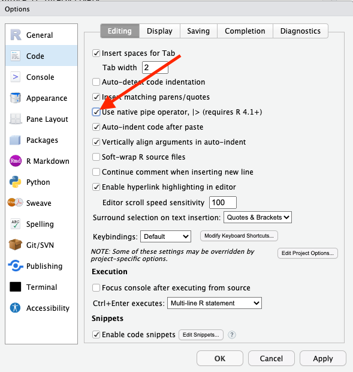

library(readr)15 Aggregates
15.1 Libraries
R is a statistical programming language that is purpose built for data analysis.
Base R does a lot, but there are a mountain of external libraries that do things to make R better/easier/more fully featured. We already installed the tidyverse – or you should have if you followed the instructions for the last assignment – which isn’t exactly a library, but a collection of libraries. Together, they make up the Tidyverse. Individually, they are extraordinarily useful for what they do. We can load them all at once using the tidyverse name, or we can load them individually. Let’s start with individually.
The two libraries we are going to need for this assignment are readr and dplyr. The library readr reads different types of data in. For this assignment, we’re going to read in csv data or Comma Separated Values data. That’s data that has a comma between each column of data.
Then we’re going to use dplyr to analyze it.
To use a library, you need to import it. Good practice – one I’m going to insist on – is that you put all your library steps at the top of your notebooks.
That code looks like this:
To load them both, you need to do this:
library(readr)
library(dplyr)
Attaching package: 'dplyr'The following objects are masked from 'package:stats':
filter, lagThe following objects are masked from 'package:base':
intersect, setdiff, setequal, unionBut, because those two libraries – and several others that we’re going to use over the course of this class – are so commonly used, there’s a shortcut to loading all of the libraries we’ll need:
library(tidyverse)You can keep doing that for as many libraries as you need.
15.2 Importing data
The first thing we need to do is get some data to work with. We do that by reading it in. In our case, we’re going to read a datatable from an “rds” file, which is a format for storing data with R. Later in the course, we’ll more frequently work with a format called a CSV. A CSV is a stripped down version of a spreadsheet you might open in a program like Excel, in which each column is separated by a comma. RDS files are less common when getting data from other people. But reading in CSVs is less foolproof than reading in rds files, so for now we’ll work with rds.
The rds file we’re going to read in contains information about classes offered at the University of Maryland since 2017.
So step 1 is to import the data. The code to import the data looks like this:
umd_courses <- read_rds("umd_courses.rds")
Let’s unpack that.
The first part – umd_courses – is the name of a variable.
A variable is just a name that we’ll use to refer to some more complex thing. In this case, the more complex thing is the data we’re importing into R that will be stored as a dataframe, which is one way R stores data.
We can call this variable whatever we want. The variable name doesn’t matter, technically. We could use any word. You could use your first name, if you like. Generally, though, we want to give variables names that are descriptive of the thing they refer to. Which is why we’re calling this one umd_courses. Variable names, by convention are one word all lower case (or two or more words connected by an underscore). You can end a variable with a number, but you can’t start one with a number.
The <- bit, you’ll recall from the basics, is the variable assignment operator. It’s how we know we’re assigning something to a word. Think of the arrow as saying “Take everything on the right of this arrow and stuff it into the thing on the left.” So we’re creating an empty vessel called umd_courses and stuffing all this data into it.
read_rds() is a function, one that only works when we’ve loaded the tidyverse. A function is a little bit of computer code that takes in information and follows a series of pre-determined steps and spits it back out. A recipe to make pizza is a kind of function. We might call it make_pizza().
The function does one thing. It takes a preset collection of ingredients – flour, water, oil, cheese, tomato, salt – and passes them through each step outlined in a recipe, in order. Things like: mix flour and water and oil, knead, let it sit, roll it out, put tomato sauce and cheese on it, bake it in an oven, then take it out.
The output of our make pizza() function is a finished pie.
We’ll make use of a lot of pre-written functions from the tidyverse and other packages, and even write some of our own. Back to this line of code:
umd_courses <- read_rds("umd_courses.rds")
Inside of the read_rds() function, we’ve put the name of the file we want to load. Things we put inside of function, to customize what the function does, are called arguments.
The easiest thing to do, if you are confused about how to find your data, is to put your data in the same folder as as your notebook (you’ll have to save that notebook first). If you do that, then you just need to put the name of the file in there (maryland_winred.rds). If you put your data in a folder called “data” that sits next to your data notebook, your function would instead look like this:
umd_courses <- read_rds("data/umd_courses.rds")In this data set, each row represents a course offered at UMD by a department during a specific term, with some other information optionally included, like seats in the class, the instructor(s) and a description.
After loading the data, it’s a good idea to get a sense of its shape. What does it look like? There are several ways we can examine it.
By looking in the R Studio environment window, we can see the number of rows (called “obs.”, which is short for observations), and the number of columns (called variables). We can double click on the dataframe name in the environment window, and explore it like a spreadsheet.
There are several useful functions for getting a sense of the dataset right in our markdown document.
If we run glimpse(umd_courses), it will give us a list of the columns, the data type for each column and and the first few values for each column.
glimpse(umd_courses)Rows: 79,366
Columns: 9
$ id <chr> "LING889", "LING200", "LING689", "LING499", "LING899", …
$ title <chr> "Directed Research", "Introductory Linguistics", "Indep…
$ description <chr> NA, "Credit only granted for: HESP120 or LING200.\nAddi…
$ term <dbl> 202112, 202112, 202112, 202112, 202112, 202112, 202112,…
$ department <chr> "Linguistics", "Linguistics", "Linguistics", "Linguisti…
$ sections <dbl> 0, 1, 0, 0, 0, 0, 0, 0, 0, 0, 2, 3, 1, 1, 8, 7, 2, 1, 0…
$ instructors <chr> NA, "Michelle Morrison", NA, NA, NA, NA, NA, NA, NA, NA…
$ seats <dbl> 0, 20, 0, 0, 0, 0, 0, 0, 0, 0, 30, 45, 5, 1, 34, 29, 6,…
$ syllabus_count <dbl> NA, NA, NA, NA, NA, NA, NA, NA, NA, NA, NA, NA, NA, NA,…If we type head(umd_courses), it will print out the columns and the first six rows of data.
head(umd_courses)# A tibble: 6 × 9
id title description term department sections instructors seats
<chr> <chr> <chr> <dbl> <chr> <dbl> <chr> <dbl>
1 LING889 Directed Res… <NA> 202112 Linguisti… 0 <NA> 0
2 LING200 Introductory… "Credit on… 202112 Linguisti… 1 Michelle M… 20
3 LING689 Independent … <NA> 202112 Linguisti… 0 <NA> 0
4 LING499 Directed Stu… <NA> 202112 Linguisti… 0 <NA> 0
5 LING899 Doctoral Dis… <NA> 202112 Linguisti… 0 <NA> 0
6 LING698 Directed Stu… <NA> 202112 Linguisti… 0 <NA> 0
# ℹ 1 more variable: syllabus_count <dbl>We can also click on the data name in the R Studio environment window to explore it interactively.
15.3 Group by and count
So what if we wanted to know how many classes were offered in each term?
To do that by hand, we’d have to take each of the 60,672 individual rows (or observations or records) and sort them into a pile. We’d put them in groups – one for each term – and then count them.
dplyr has a group by function in it that does just this. A massive amount of data analysis involves grouping like things together and then doing simple things like counting them, or averaging them together. So it’s a good place to start.
So to do this, we’ll take our dataset and we’ll introduce a new operator: |>. The best way to read that operator, in my opinion, is to interpret that as “and then do this.” This is called the “pipe operator” and it’s a huge part of writing R statements. So much so that there’s a keyboard shortcut for this: cmd-shift-m on the Mac and ctrl-shift-m on Windows. In order to enable this shortcut, you’ll need to set an option under Tools -> Global Options, in the “Code” section. Make sure you check the box labeled “Use native pipe operator” and then click “Apply”, like so:

Don’t like that character? R also has one that does the same thing: %>%. They both work.
We’re going to establish a pattern that will come up again and again throughout this book: data |> function. In English: take your data set and then do this specific action to it.
The first step of every analysis starts with the data being used. Then we apply functions to the data.
In our case, the pattern that you’ll use many, many times is: data |> group_by(COLUMN NAME) |> summarize(VARIABLE NAME = AGGREGATE FUNCTION(COLUMN NAME))
In our dataset, the column with term information is called “term”
Here’s the code to count the number of courses in each term:
umd_courses |>
group_by(term) |>
summarise(
count_classes = n()
)# A tibble: 29 × 2
term count_classes
<dbl> <int>
1 201712 487
2 201801 4479
3 201805 1231
4 201808 4465
5 201905 1183
6 201908 4537
7 201912 516
8 202001 4648
9 202005 1357
10 202008 4508
# ℹ 19 more rowsSo let’s walk through that.
We start with our dataset – umd_courses – and then we tell it to group the data by a given field in the data. In this case, we wanted to group together all the terms, signified by the field name term, which you could get from using the glimpse() function. After we group the data, we need to count them up.
In dplyr, we use the summarize() function, which can do alot more than just count things.
Inside the parentheses in summarize, we set up the summaries we want. In this case, we just want a count of the number of classes for each term grouping. The line of code count_classes = n(), says create a new field, called count_classes and set it equal to n(). n() is a function that counts the number of rows or records in each group. Why the letter n? The letter n is a common symbol used to denote a count of something. The number of things (or rows or observations or records) in a dataset? Statisticians call it n. There are n number of classes in this dataset.
When we run that, we get a list of terms with a count next to them. But it’s not in any order.
So we’ll add another “and then do this” symbol – |> – and use a new function called arrange(). Arrange does what you think it does – it arranges data in order. By default, it’s in ascending order – smallest to largest. But if we want to know the term with the most classes, we need to sort it in descending order. That looks like this:
umd_courses |>
group_by(term) |>
summarise(
count_classes = n()
) |>
arrange(desc(count_classes))# A tibble: 29 × 2
term count_classes
<dbl> <int>
1 202408 5052
2 202208 4975
3 202401 4959
4 202501 4893
5 202308 4849
6 202001 4648
7 202301 4578
8 202108 4545
9 201908 4537
10 202008 4508
# ℹ 19 more rowsThe term labeled 202408, representing the Fall 2024 term, has the most classes.
We can, if we want, group by more than one thing. The courses data contains a column detailing the department.
We can group by “term” and “department” to see how many courses each department offered in each term. We’ll sort by department and term.
umd_courses |>
group_by(term, department) |>
summarise(
count_classes = n()
) |>
arrange(term, department)`summarise()` has grouped output by 'term'. You can override using the
`.groups` argument.# A tibble: 4,270 × 3
# Groups: term [29]
term department count_classes
<dbl> <chr> <int>
1 201712 African American Studies 6
2 201712 Agricultural and Resource Economics 1
3 201712 American Studies 4
4 201712 Animal Science 5
5 201712 Anthropology 25
6 201712 Applied Mathematics & Scientific Computation 3
7 201712 Arabic 1
8 201712 Art History & Archaeology 3
9 201712 Art Studio 13
10 201712 Asian American Studies 1
# ℹ 4,260 more rows15.4 Other summarization methods: summing, mean, median, min and max
In the last example, we grouped like records together and counted them, but there’s so much more we can do to summarize each group.
Let’s say we wanted to know the total number of seats offered in each term? For that, we could use the sum() function to add up all of the values in the column “seats”. We put the column we want to total – “seats” – inside the sum() function sum(seats). Note that we can simply add a new summarize function here, keeping our count_classes field in our output table.
umd_courses |>
group_by(term) |>
summarise(
count_classes = n(),
total_seats = sum(seats)
) |>
arrange(desc(total_seats))# A tibble: 29 × 3
term count_classes total_seats
<dbl> <int> <dbl>
1 202408 5052 241341
2 202208 4975 230796
3 202308 4849 229128
4 202108 4545 223321
5 202401 4959 220040
6 202008 4508 217314
7 201908 4537 217075
8 201808 4465 208839
9 202301 4578 207465
10 202201 4493 206075
# ℹ 19 more rowsWe can also calculate the average number of seats for each department – the mean – and the number that sits at the midpoint of our data – the median.
umd_courses |>
group_by(term) |>
summarise(
count_classes = n(),
total_seats = sum(seats),
mean_seats = mean(seats),
median_seats = median(seats)
) |>
arrange(desc(total_seats))# A tibble: 29 × 5
term count_classes total_seats mean_seats median_seats
<dbl> <int> <dbl> <dbl> <dbl>
1 202408 5052 241341 47.8 23
2 202208 4975 230796 46.4 22
3 202308 4849 229128 47.3 24
4 202108 4545 223321 49.1 25
5 202401 4959 220040 44.4 24
6 202008 4508 217314 48.2 22
7 201908 4537 217075 47.8 24
8 201808 4465 208839 46.8 20
9 202301 4578 207465 45.3 25
10 202201 4493 206075 45.9 24
# ℹ 19 more rowsWe see something interesting here. The mean number of seats is higher than the median number in most cases, but the difference isn’t always huge. In some cases the mean gets skewed by larger or lower amounts. Examining both the median – which is less sensitive to extreme values – and the mean – which is more sensitive to extreme values – gives you a clearer picture of the composition of the data.
What about the highest and lowest number of seats for each department? For that, we can use the min() and max() functions.
umd_courses |>
group_by(department) |>
summarise(
count_classes = n(),
total_seats = sum(seats),
mean_seats = mean(seats),
median_seats = median(seats),
min_seats = min(seats),
max_seats = max(seats)
) |>
arrange(desc(total_seats))# A tibble: 222 × 7
department count_classes total_seats mean_seats median_seats min_seats
<chr> <int> <dbl> <dbl> <dbl> <dbl>
1 Business and Man… 2498 212114 84.9 45 0
2 Computer Science 1410 157586 112. 45 0
3 Mathematics 1340 135107 101. 27 0
4 English 2054 130166 63.4 23 0
5 Biological Scien… 1564 124339 79.5 30 0
6 Information Stud… 1613 115974 71.9 38 0
7 Chemistry 875 106586 122. 36 0
8 Engineering Scie… 809 103095 127. 45 0
9 Economics 1441 88650 61.5 35 0
10 Communication 1780 87846 49.4 30 0
# ℹ 212 more rows
# ℹ 1 more variable: max_seats <dbl>From this, we can see that every department has courses with 0 seats listed. We’ll need to account for those in any analysis, probably by excluding them. The variation in mean and median seats is interesting, too: look at Mathematics and English compared to Computer Science and Engineering, for example. These patterns aren’t random: departments make choices about the courses they offer.
It would be interesting to see what the course with the largest number of seats is. To do that, we could simply take our original data set and sort it from highest to lowest on seats
umd_courses |>
arrange(desc(seats))# A tibble: 79,366 × 9
id title description term department sections instructors seats
<chr> <chr> <chr> <dbl> <chr> <dbl> <chr> <dbl>
1 UNIV100 The Student… "Credit on… 201808 Universit… 144 Valerie Go… 2876
2 UNIV100 The Student… "Credit on… 202108 Universit… 131 Tori Shay;… 2685
3 UNIV100 The Student… "Credit on… 202208 Universit… 127 Tori Shay;… 2575
4 ENES140 Discovering… "Additiona… 202201 Engineeri… 10 James Green 2500
5 ENES140 Discovering… "Additiona… 202501 Engineeri… 10 James Green 2500
6 ENES140 Discovering… "Additiona… 202101 Engineeri… 10 James Green 2500
7 ENES140 Discovering… "Additiona… 202401 Engineeri… 10 James Green 2500
8 ENES140 Discovering… "Additiona… 202001 Engineeri… 10 James Green 2500
9 ENES140 Discovering… "Additiona… 201801 Engineeri… 10 James Green 2500
10 ENES140 Discovering… "Additiona… 202301 Engineeri… 10 James Green 2500
# ℹ 79,356 more rows
# ℹ 1 more variable: syllabus_count <dbl>UNIV100 and ENES140 have a LOT of seats. Are they virtual classes? Hybrid? What else could we ask of this data?